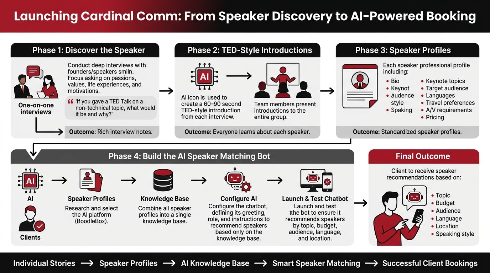

Cardinal Comm Chatbot
Your one-stop solution for professional speaking engagements
Launch the live chatbot →A chatbot built on our group's own speaker profiles — what topics each speaker covers, their bio, technical requirements, travel preferences, and pricing — that recommends the optimal speaker for a user's booking based on their specific needs.
We went from cold interviews to a working recommendation engine in four phases:
-
01
Discover the Speaker
Conducted one-on-one interviews with each speaker, asking about their passions, values, life experience, and motivations — including prompts like "If you gave a TED Talk on a non-technical topic, what would it be and why?"
→ Outcome: rich interview notes
-
02
TED-Style Introductions
Used AI to turn each interview into a 60–90 second TED-style introduction, then presented each speaker's introduction to the full group.
→ Outcome: everyone learns about each speaker
-
03
Speaker Profiles
Converted each speaker's story into a standardized professional profile: bio, keynote topics, target audience, speaking style, languages, travel preferences, A/V requirements, and pricing.
→ Outcome: standardized speaker profiles
-
04
Build the AI Speaker-Matching Bot
Selected BoodleBox as the AI platform, combined all speaker profiles into a single knowledge base, and configured the chatbot's greeting, role, and instructions so it only recommends speakers from that knowledge base. Launched and tested it to confirm it matches speakers by topic, budget, audience, language, and location.
→ Final outcome: clients get speaker recommendations by topic, budget, audience, language, location, and speaking style

This artifact turns a set of individually rich, unstructured speaker interviews into a single AI-searchable knowledge base. It demonstrates the ability to configure, launch, and test a retrieval-based chatbot that gives real clients accurate, criteria-based recommendations — instead of a generic list to scroll through.